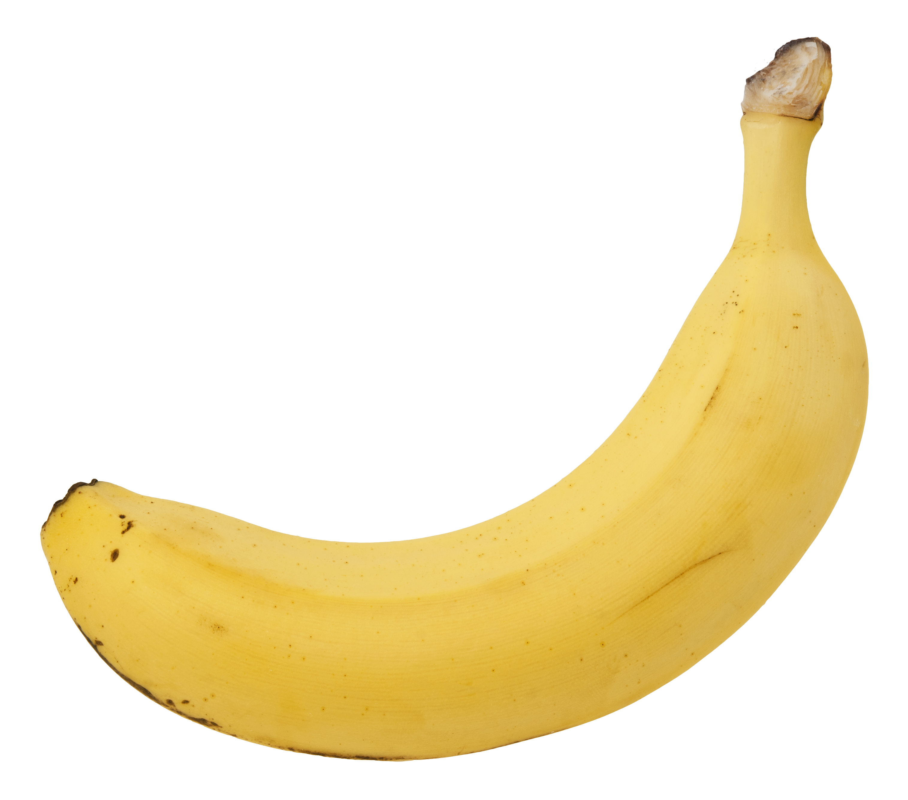

This is Sophie!
Online Habits:
In general, she spends more time on apps. Typically Tiktok and Instagram. She also enjoys playing mobile games like Mobile Legends and Brawl Stars.
“I feel like I spend an embarrassing amount of time on social media.”
— Sophie
Top 7 apps visited in the last 24hrs
- Instagram
- Tik tok
- Mobile Legends
- Discord
- Messages
- Chrome
- Spotify
Top 5 favorite ways of spending free time
- Watching TV shows
- Playing with my cats
- Baking
- Cleaning
- Painting her nails
Add the link here here.
My partner thinks of themself as a banana
